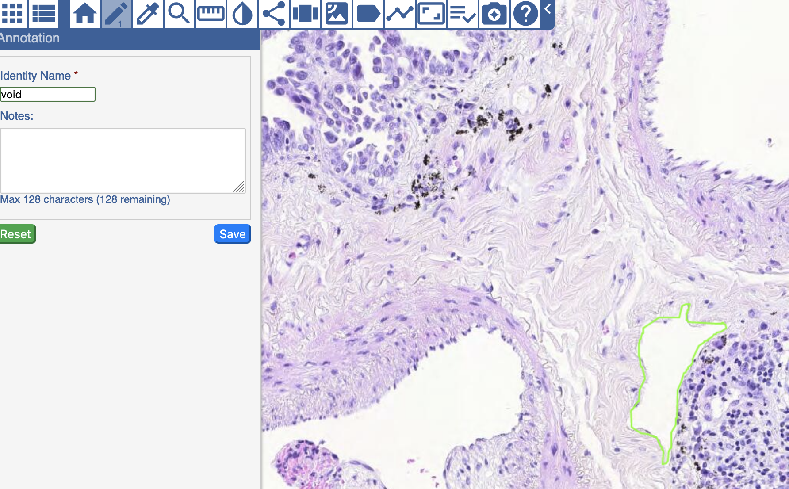

Selecting an Image
Depending on what is providing the image metadata, a different login process may be necessary. For public instances, no log in is necessary, and you can proceed to view slides. Use of other tools, such as annotations may or may not require login in this case. For slim instances, login should be done through a redirect directly. For instances which use the more intricate slide mangment system (pathDB), login should be done on the login link on the main page. At this point, select a collection, if applicable, and proceed to open or "view" the image of your choice.
Viewing an Image

Once an image is open, you can pan around the image by either clicking and dragging (when no conflicting tool, such as the pen, is open), or by moving the red bounding box in the viewport in the bottom right. Zooming can be accomplished through the scroll wheel, pinch events on a touch screen, by using the zoom slider or its associated buttons, or by clicking on the zoom number and inputting a different number.
Using Tools
The toolbar is in the top-left of the main content window. Use the toolbar buttons to manipulate the slide. To close any toolbar button, click the same button again or a new button.
| Tool | Name | Function |
|---|---|---|
 |
Annotations | Opens the Annotation panel, where you can select which annotation set to view, name that annotation set, add optional notes about the annotation set, save the annotation set, and reset the panel to its original state. |
 |
Layer Manager | Opens the Layers Manager panel, where you can select which layers to view. |
 |
Home | Return to the data table so that you can open another slide. |
 |
Draw | Draw thin lines, thick lines, or polygons on the image. To maintain the integrity of measurements, avoid drawing shapes that overlap or intersect one another. |
 |
Preset Labels | Use a preset annotation type immediately to quickly annotate a silde consistently. |
 |
Magnifier | The Magnifier works like a magnifying glass and allows you to see the slide at normal magnification (1.0), low magnification (0.5), or high magnification (2.0). Click a magnification level and place the bounding box on the area of the slide you want to magnify. |
 |
Measurement | Drag this tool on the slide to learn the measurement in micrometers. |
 |
Share View | Opens a window with a URL to the current presentation state of the slide including the magnification level, layers that are currently open, and your position on the image. |
 |
Side by Side Viewer | Shows the Layer Manager panel, the left and right layers, and inset window. For the right and left layer, select which layer you want to view. |
 |
Heatmap | For a slide with heatmap data, opens the choices of heatmaps available, as well as ways of displaying the heatmaps. The gradient shows all of the values on the selected spectrum for the field you selected. Contains a heatmap edit pen function. |
 |
Labeling | Use this tool to draw a circle or rectangle around a tumor region, measure an area on the slide, download labels, and submit a bug report. The Labeling tool has its own toolbar with tools in the following order from left to right: return to the previous slide, place a square on the slide, place a circle on the slide, measure an area, download labels, and submit a bug report. Click the left arrow at the far right of the toolbar to hide it, then click the right arrow to show it. |
 |
Segment | This tool allows you to display, count, and export nuclear segmentations on the image. Clicking this tool opens the following custom toolbar. |
 |
Model | Show results from a pre-trained tensorflow compatible model on a ROI of the slide. |
 |
Download Slide | Download the slide image to your system |
 |
Mark Reviewed | Use to signify the completion of review of a slide. |
 |
Bug Report | Report a bug or give feedback. |
 |
Slide Capture | Click to take a screenshot of the slide and annotations on it. |
 |
Tutorial | Click to view a guided tour of the viewer tools. |
Toolbar Shortcuts
| Tool | Shortcut |
|---|---|
| Annotation | Ctrl + a |
| Magnifier | Ctrl + m |
| Measurement | Ctrl + r |
| Side-by-Side | Ctrl + s |
| Close all tools | ESC |